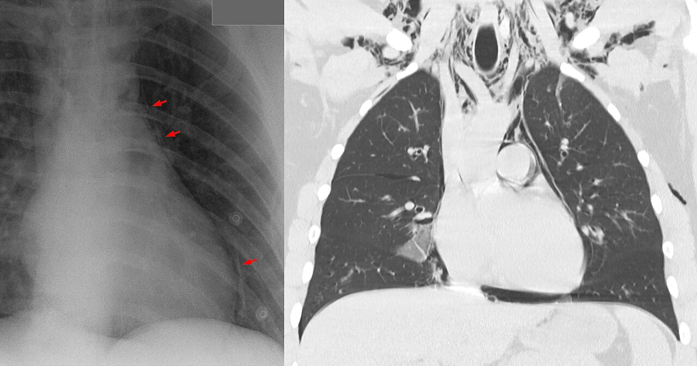

Ficha del catálogo
Neumomediastino
- Sistema
- Respiratorio
- Modalidad
- RX
- Región
- Tórax
- Dificultad
- Intermedio
Presencia de aire en el tejido conjuntivo del mediastino, que llega desde los alvéolos rotos siguiendo las vainas broncovasculares, desde la vía aérea o desde el tubo digestivo. Puede ser espontáneo en jóvenes tras esfuerzos o vómitos, o secundario a ventilación mecánica, traumatismo o perforación esofágica, situación esta última que resulta grave.
Técnica
Radiografía de tórax posteroanterior y lateral, y tomografía de tórax cuando se necesita confirmar el hallazgo o buscar su origen.
Qué observar
- Líneas de aire verticales que perfilan la silueta cardiaca y los grandes vasos
- Aire que separa la pleura mediastínica y dibuja una línea fina paralela
- Signo del diafragma continuo por aire retrocardiaco
- Aire que se extiende al cuello y produce enfisema subcutáneo
- Elevación del timo en el lactante por el aire subyacente
- Búsqueda de neumotórax acompañante y de causa esofágica o traqueal
Hallazgos
Bandas de aire que delimitan estructuras mediastínicas y se prolongan hacia los tejidos blandos del cuello.
Perlas
Un neumomediastino aparentemente banal obliga a preguntar por vómitos, instrumentación o traumatismo, porque una perforación esofágica cambia el pronóstico por completo. La presencia de derrame pleural izquierdo con líquido de aspecto complejo debe hacer sonar la alarma.
Diagnóstico diferencial
- Neumotórax medial
- El aire se desplaza con los cambios de posición y no perfila los vasos.
- Neumopericardio
- El aire queda limitado por el saco pericárdico y no asciende al cuello.
- Enfisema subcutáneo aislado
- Aire en planos musculares sin líneas mediastínicas.
Simuladores
- Pliegue cutáneo proyectado sobre el mediastino
- Grasa mediastínica que simula una línea de aire
- Artefacto de borde en imagen digital
Por modalidad
- RX
- Suele bastar para detectarlo si se busca de forma dirigida
- TC
- Confirma pequeñas cantidades de aire y orienta hacia el origen
Protocolo
Radiografía frontal y lateral en bipedestación siempre que sea posible, y tomografía con estudio del esófago cuando se sospecha perforación.
Clasificación
Errores frecuentes
- No investigar la causa cuando existe antecedente de vómitos o de instrumentación
- Confundirlo con neumotórax y colocar un drenaje innecesario
- Pasar por alto el aire retrocardiaco en la proyección frontal

neumomediastino aire mediastinico diafragma continuo enfisema subcutaneo perforacion esofagica